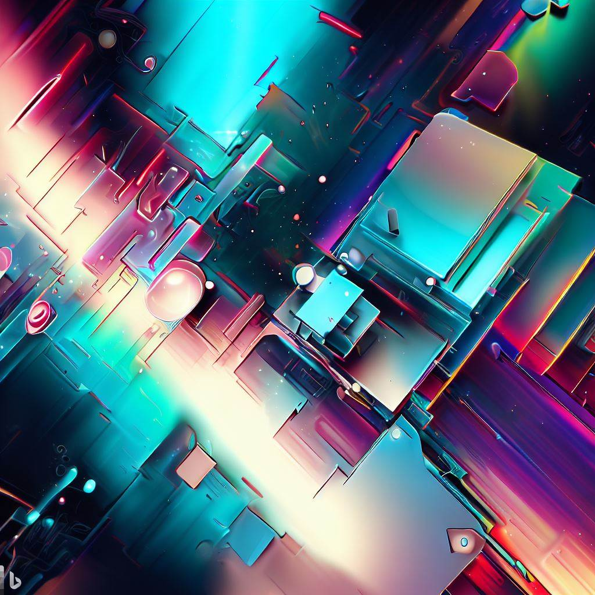

Hi!
how are you?
{About Me...}
From a young age, I have been captivated by technology, and over the
past 20 years, I have nurtured my passion for both hardware and
software. As an enthusiast, technologies lover, and professional, I am
intrigued by the Internet of Things, prototyping, cloud technology,
and front-end and back-end development.
My natural aptitude for problem-solving and analytical thinking,
coupled with my insatiable curiosity, has allowed me to gain valuable
experience in managing users and addressing technical issues. My
expertise in applied electronics and emerging technologies enables me
to deliver comprehensive and efficient technical support.
I firmly believe that our passion for our work drives the outcomes we
achieve. I take great satisfaction in providing technical support to
users and resolving their issues. Witnessing the smiles of those I
have assisted fuels my motivation to continually advance in my career
and strive for self-improvement, both personally and professionally.
Currently, I am pursuing a certification as a Full Stack Programmer
with MERN Stack at Rock{TheCode}, further solidifying my commitment to
a career in technology.
{My Skills...}
- HTML 5
- CSS 3
- JavaScript
- Bootstrap
- Java
- Python
- Node.js
- C#
- Photoshop
- Fusion 360
- 3D Printers
- Laser Cutter Machine
- IoT
- Device Setup
- Prototype/Maker
- Audio/Video Editing
- Hardware
{My Projects...}
- Travel Agency WebSite 
- Vegan Restaurant Branding
- Cultural Association
- Business Management App
- Office Interior Design
- Promotional Video Sports Event
- Interactive Art Installation
- Organic Product Packaging
- Instant Chat App
{My Final Target...}